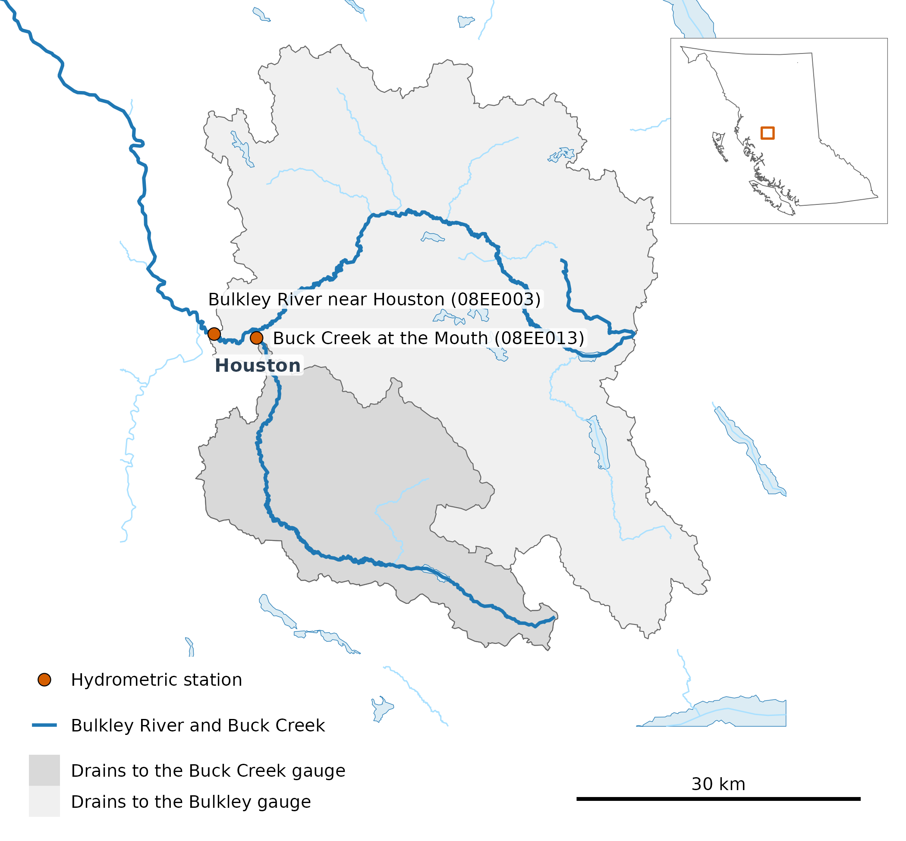
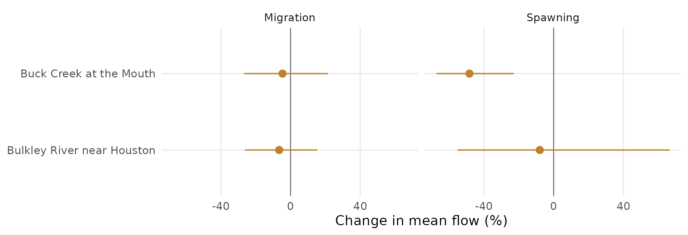

Measured Stream Flow Against Its 1981–2010 Normal: Two Long-Record Gauges
Source:vignettes/flow-departure-normal.Rmd
flow-departure-normal.RmdThe R package wet
(Irvine 2026c)
measures stream flow and water temperature on British Columbia’s
Freshwater Atlas. This case study measures summer flow at two
long-record gauges near Houston, in the weeks when chinook salmon
migrate and spawn, against its 1981–2010 normal. That period is one of
the World Meteorological Organization’s 30-year standard normals (Arguez and Vose 2011,
699; World
Meteorological Organization 2017), and the one
wet’s published flows are normals of: its water balance
runs on climr’s 1981–2010
climate (Daust et al.
2024), and its routed flow is the 1981–2010 mean of the
Pacific Climate Impacts Consortium’s model run (Schnorbus
2018; Craig et al.
2020; Werner et al.
2019). It already holds part of recent warming (Hansen
et al. 2012), so Rebuilding Stream Flow History
Where Gauges Are Few measures change from 1951–1980 instead.
The answer. Over 2016–2025, mean flow in every chinook salmon life history timing window at both gauges was below its 1981–2010 normal, by 5% to 48%. Every window at both gauges was below normal in each year from 2023, and 11 of those 12 window means were drier than nine 1981–2010 years in ten. At Bulkley River near Houston, the normal rests on 1981–1998, the years with enough record.
Where are the gauges?
Both gauges are near Houston. Buck Creek joins the Bulkley River in the town, and the Bulkley gauge sits downstream of its mouth, so it measures Buck Creek’s flow as well: Buck Creek drains 24% of the area above it. The Bulkley joins the Skeena River at Hazelton, about 120 km north-west of Houston.

The two gauges (points) and the land each one drains (shaded). Buck Creek’s catchment (567 km²) lies inside the Bulkley gauge’s (2,315 km²), so the two records are not independent. The Bulkley River and Buck Creek are drawn heavy; other streams of order 5 and up (thin) and lakes of 100 ha and up (blue) are drawn only near the catchments. Houston is labelled, the bar is 30 km, and the inset places the map in British Columbia.
What is a chinook salmon life history timing window?
A chinook salmon life history timing window, or window for short, is a stretch of the year when chinook use a stream for a part of their life cycle. In the upper Bulkley River, the early run of chinook passes Moricetown Canyon before about July 30, and chinook spawn in August and September (Gottesfeld and Rabnett 2007, 355). New Graph’s species-timing table sets the Bulkley’s windows from that report: adult migration from May 1 to August 1, and spawning from August 1 to September 15. Its fry migration window falls within these two, so it is not shown on its own, and its other 2 chinook windows, incubation and emergence, reach into November–April, when the gauges can read under ice, so they are left out. A window’s flow in a year is its mean daily flow, counted when 80% of its days have a record.
How did the last ten years compare with normal?
Each bar is one chinook salmon life history timing window in one year: its mean flow as a percentage of that window’s 1981–2010 mean, so 100% is normal and lower is drier. Wet years pull the mean up, so a typical year sits under it; the dashed line marks the median year.
Before 2023 the decade swings both ways in every window. From 2023, every bar falls below the median year as well as the mean, and 5 were drier than any 1981–2010 year. The two gauges fall on the same side of normal in all but one of the 18 window-years both recorded, partly because one catchment holds the other.

Mean flow in each chinook salmon life history timing window, 2016–2025, as a percentage of its 1981–2010 mean (solid line, given in m³/s at the top right of each panel). Each bar is labelled with its percentage, coloured by whether it falls below or above the mean, and paler where any of its days are provisional. The dashed line is the median 1981–2010 year. At Bulkley River near Houston (08EE003), the 1981–2010 normal rests on 1981–1998: no window in 1999–2010 has 80% of its days.
What did the year look like?
The same comparison day by day: the last ten years’ mean and median day against 1981–2010’s, over the whole year and, on its own scale, over the months around spawning, where the spring freshet would otherwise flatten the low summer flow.
![Daily flow at each gauge: the whole year (left), with the chinook salmon life history timing window for migration beneath, and July to October (right), with the one for spawning, on its own scale. Lines are the mean (solid) and median (dashed) day over the years of each gauge's 1981–2010 normal (grey) and over 2016–2025 (colour). A normal line is drawn on days with at least 10 of those years on record, so at the Bulkley gauge it runs only from 1 May to 8 November; a 2016–2025 line on days each of the gauge's recent years has a record (9 at Buck Creek, which has no 2016). The shaded months, November to April, are when the gauges can read under ice.](flow-departure-normal_files/figure-html/hydrograph-1.png)
Daily flow at each gauge: the whole year (left), with the chinook salmon life history timing window for migration beneath, and July to October (right), with the one for spawning, on its own scale. Lines are the mean (solid) and median (dashed) day over the years of each gauge’s 1981–2010 normal (grey) and over 2016–2025 (colour). A normal line is drawn on days with at least 10 of those years on record, so at the Bulkley gauge it runs only from 1 May to 8 November; a 2016–2025 line on days each of the gauge’s recent years has a record (9 at Buck Creek, which has no 2016). The shaded months, November to April, are when the gauges can read under ice.
How much has mean flow changed?
Each point is the change in a chinook salmon life history timing window’s mean flow, from its 1981–2010 mean to the mean of 2016–2025. Its bar spans the middle 90% of changes from resampling the years in each period. With ten recent years or fewer, that bar is narrower than a 90% confidence interval: it shows the spread of the resamples, not a test.

Change in each chinook salmon life history timing window’s mean flow, from its 1981–2010 mean to the mean of 2016–2025, at each gauge (point); the bar spans the middle 90% of changes from resampling the years in each period, and the vertical line is no change.
How were the numbers made?
These calls produced each chinook salmon life history timing window’s
mean flow, with normal and departure from the R package cd
(Irvine 2026a). They
read HYDAT, the water-temp-bc
archive and ECCC’s real-time feed (through tidyhydat
(Albers
2017)), so the article runs on a cached copy of their
output.
library(wet)
# HYDAT, then ECCC provisional, then real-time, per station
daily <- wet_station_daily(c("08EE013", "08EE003"))
windows <- data.frame(window = c("Migration", "Spawning"), start = c("05-01", "08-01"),
end = c("08-01", "09-15"))
stats <- wet_window_stats(daily, windows, stats = "mean")
# normal and departure are cd's, one station per call
buck <- stats[stats$station_number == "08EE013", names(stats) != "station_number"]
base <- cd::cd_baseline(buck, 1981:2010)
departure <- cd::cd_anomaly(buck, base)What does it not show?
- The latest years are provisional: approved HYDAT flows end in March 2025, so 1 of the ten years rests on provisional flows, which may be revised.
- Some bars have days missing: 2 of the 38 bars rest on 80%–91% of their days: Bulkley River near Houston in 2025 (migration and spawning).
- Some normals have years missing: a year is left out of a chinook salmon life history timing window’s normal when the window has under 80% of its days, so Buck Creek at the Mouth lacks 1984 in spawning; Bulkley River near Houston lacks 1999–2010 in every window.
- The windows come from the literature, not from observation: New Graph’s species-timing table cites Gottesfeld and Rabnett (2007) for both.
Software and citation
The flows in this article are cached from HYDAT release 2026-07-17, with provisional and real-time flows retrieved 1 October 2026. The chinook salmon life history timing windows are New Graph’s species-timing table at commit c97c4d0, and the catchments, the stream mouths and the rivers they join are the Freshwater Atlas’s.
The software, each cited:
-
wet(Irvine 2026c) reads the gauge records and makes the window statistics. -
cd(Irvine 2026a) takes the normal and the departures. -
tidyhydat(Albers 2017) reads the ECCC real-time feed. -
fwapg(Norris 2024) loads the Freshwater Atlas into PostgreSQL and delineates each gauge’s catchment from it. -
ggplot2(Wickham 2016),gq(Irvine 2026b) andsf(Pebesma and Bivand 2023) make the figures and the map;knitr(Xie 2026b) andbookdown(Xie 2026a) render the article, all in R (R Core Team 2025).
This build ran on wet 0.4.32, cd 0.6.13,
commit 86989e3, gq 0.16.1 and commit aa082d0. To cite
wet:
Irvine A (2026). wet: Stream Flow and Water Temperature for the BC Freshwater Atlas. New Graph Environment Ltd. doi:10.5281/zenodo.23305781 https://doi.org/10.5281/zenodo.23305781. Version 0.4.32, https://github.com/NewGraphEnvironment/wet.
Data
- Daily flow: the Water Survey of Canada’s HYDAT (Environment and Climate Change Canada 2021), release 2026-07-17.
- Provisional and real-time daily flow: Environment and Climate Change Canada’s records, as archived by water-temp-bc, and its real-time feed.
- Timing windows for chinook salmon: New Graph’s species-timing table (Gottesfeld and Rabnett 2007).
- Streams, lakes, catchments and place names: the Province of British Columbia’s Freshwater Atlas (FLNRORD 2021) and BC Geographic Names, through DataBC.